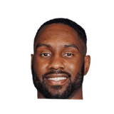

“Tobias Harris, whom I've known for a long time. We've got Malik Beasley, Tim Hardaway Jr, and Paul Reed coming in. I feel very good about the offseason with the veterans. I think Trajan Langdon did a good job bringing the right people in, but still keeping flexibility.”

What NBA players and coaches have said about Malik Beasley
11 quotes about Malik Beasley from 11 players, coaches and executives, newest first. Each one links to its original source.
Best quotes
“We needed that bad, being a young team, we just needed consistent vets, and they don’t only perform on the court but off the court.“Tobias is one guy who’s constantly teaching about all different things — life, financial stuff. Timmy, Malik (Beasley), they’ve very vocal. They’re not guys who are to themselves. They’re part of the group, they’re bringing guys up, they’re constantly competing. They’ve been huge for us.”
Eric Walden:Will Hardy, on Malik Beasley's injury:
“His ankle is day-to-day. I would hope that he's ready for the start of the regular season. But you know, with ankles, it's a day-to-day process how he responds to the treatment and the rehab workouts that he's doing.”
What Malik Beasley has said about other players and coaches →
Quotes per season
Who talks about Malik Beasley most
 Anthony Edwards1 quote
Anthony Edwards1 quote- Chris Finch1 quote
 Jalen Duren1 quote
Jalen Duren1 quote
Jaylen Nowell1 quote LeBron James1 quote
LeBron James1 quote- Michael Malone1 quote
- Ryan Saunders1 quote
- Sachin Gupta1 quote
- Tom Gores1 quote
 Trajan Langdon1 quote
Trajan Langdon1 quote Will Hardy1 quote
Will Hardy1 quote
Back and forth
- Malik Beasley and Michael Malone3 quotes
2025-26
1 quoteLangdon on if he's talked to Malik Beasley's agent:
“No, I have not. He doesn’t have an agent right now, so that would make it hard.”
2024-25
2 quotes“We needed that bad, being a young team, we just needed consistent vets, and they don’t only perform on the court but off the court.“Tobias is one guy who’s constantly teaching about all different things — life, financial stuff. Timmy, Malik (Beasley), they’ve very vocal. They’re not guys who are to themselves. They’re part of the group, they’re bringing guys up, they’re constantly competing. They’ve been huge for us.”
“Tobias Harris, whom I've known for a long time. We've got Malik Beasley, Tim Hardaway Jr, and Paul Reed coming in. I feel very good about the offseason with the veterans. I think Trajan Langdon did a good job bringing the right people in, but still keeping flexibility.”
2022-23
2 quotesLeBron on the Lakers since the trade deadline (they’re 4-1 since acquiring Russell, Vanderbilt and Beasley):
“I feel like we’re in a good place. We’re gonna try to continue that.”
Eric Walden:Will Hardy, on Malik Beasley's injury:
“His ankle is day-to-day. I would hope that he's ready for the start of the regular season. But you know, with ankles, it's a day-to-day process how he responds to the treatment and the rehab workouts that he's doing.”
2021-22
1 quoteDane Moore:Chris Finch on Malik Beasley's role this season:
“We’ve said that if you want to be a good team, you’re going to have seven or eight quality starter players. He’s a starter playerbut maybe best if the strength of his role with different lineups than the starting lineup.”
2020-21
4 quotesDane Moore:Jaylen Nowell on potentially starting while Malik Beasley is out:
“That would mean everything. Everything I worked for. That would be my first start, so obviously that's a big accomplishment. If that happens, it's cool. If it doesn't, that's cool, too.”
Jaylen Nowell on Malik BeasleyTwitter @DaneMooreNBA
Anthony Edwards on the D'Angelo Russell, Malik Beasley and Edwards three-man backcourt:
“They can't help off of DLo and Bease because they can shoot. And they can't help off of me because I can shoot -- *starts laughing* -- every now and again.”
Sachin Gupta on the free agencies of Malik Beasley and Juancho Hernangomez:
“We do have plenty of room below the tax. We’ve got our own free agents with Malik and Juancho, so with the Bird rights we’ll be able to re-sign those guys.”
Sachin Gupta on Malik Beasley, Juancho HernangomezTwitter @DaneMooreNBA
Timberwolves coachRyan Saunders on Malik Beasley's arrest as @ Jon Krawczynski first reported:
“We're aware of the situation involving Malik and in the process of gathering more information.”
2018-19
1 quoteHarrison Wind:Michael Malone on Malik Beasley:
“He showed me (in Game 1) that he can guard Damian Lillard.”